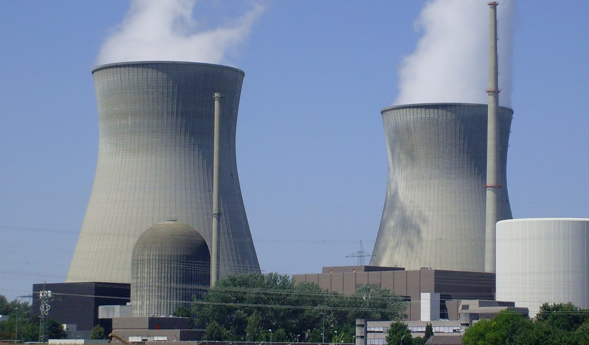
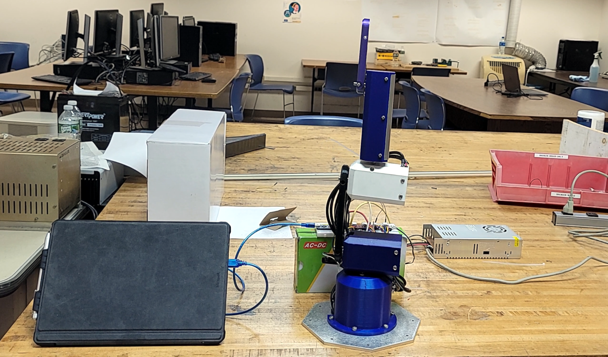
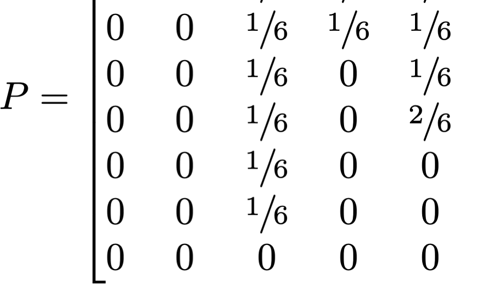

I am a recent graduate with a major in Electrical Engineering and an interest for Software Development, who is a goal-oriented and motivated individual with a passion for solving complex problems through critical thinking and engineering expertise.
Work Experience

Constellation Energy
-
Developed real-time data analysis algorithms in multiple Python scripts to monitor 5+
critical systems, reducing manual oversight and improving operational efficiency.
-
Identified root causes of component failures such as high AC ripple voltage and degraded
capacitors, diodes, SCRs,resulting in an increase in work efficiency.
-
Lab tested switching power supplies under load to ensure output ripple voltage is below 5%,
reducing manpower cost by several hours.
-
Troubleshot and performed design analysis on over 15+ circuit cards through circuit analysis
and simulation (LT Spice), leading to fewer labor hours.
Macquarie Capital
-
Selected as an intern under the Leadership Education Advancement and Support (LEADS) intern
program, which provides exposure and prepares promising high school students for
professional business careers.
-
Built financial models to forecast and analyze the cost of attending different 4 years
universities.
-
Gave presentations to the key stakeholders of the company on the forecast and analysis
models.
-
Successfully formulated the project plan, delegated and monitored team tasks, and progress
for the Macquarie LEADS Intern graduation event.
Projects

Six Degree Robotic Arm
Created high precision motion detection using 5+ Python scripts for robot's potential of playing table tennis against a human - yielded a 94.6% accuracy of tracking a ping pong ball. Robot performed multiple assembly operations including automated work like assembly line.

AM Radio Transmitter
Obtained hands-on experience with protoboard, relevant circuit elements and integrated circuits. Designed and created circuits to demonstrate the phenomena of resonance using combinations of inductors and capacitors to form frequency selective circuits and phase shifters. Can transmit signal from frequencies of several hundred kilohertz to gigahertz, using variable capacitor.
Public Transportation Budget Planning
Transportation authority wanted to purchase new buses from different manufacturers, with the aim to maximize passenger capacity, remaining within budget and fuel consumption limits. Implemented multidimensional knapsack algorithm, defined the fitness function that analyzed data on passenger capacity, cost, and fuel consumption from each manufacturer. The optimization model outputted the highest possible number of passengers, to raise profit amounts, while staying within budgetary constrains - providing an overall 25% efficiency for the entire transportation authority.

Gaussian Elimination Algorithms, Image Processing
Created a C++ program for solving linear equations with sorting options (ascending/descending) based on user input. Simultaneously generated optimized MATLAB code using C++ to leverage existing workflows. Developed C++ codes to process 20+ text-based images by filtering out 5 patterns from variable sized image matrix.
{kind=link}
{kind=link}
{kind=link}
{kind=link}
{kind=link}